| Nom de Plats | region | Images |
|---|---|---|
| chakchouka | Constantine | 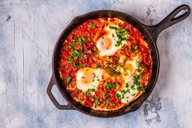 |
| couscous | Tizi Ouzou | 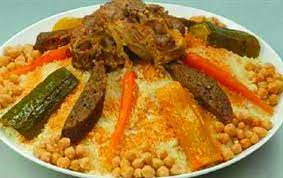 |
| tajine | Bel-Abbas | 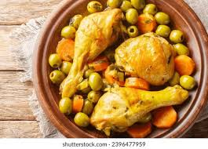 |
| bourek | Anaba | 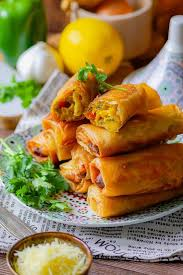 |
| maqouda | Oran | 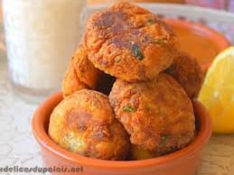 |
| aghroum n zit | Bejaia | 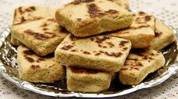 |
| Melfouf | Ain Defla |  |
| Meqfoul | At Yenni |  |
| Lekbab | Boumerdés |  |
| Aghroum | Oudiya |  |
| pizza carre | Oran | 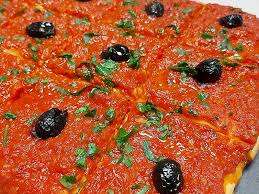 |
| Chorba | Guelma | 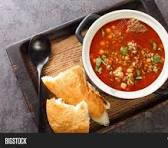 |
| Hmis | Djelfa |  |
| Sfiria | Chlef | 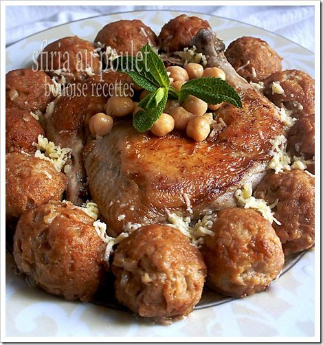 |
| abisar | Beni Douala | 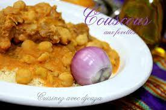 |
| vivras | Djourdjura | 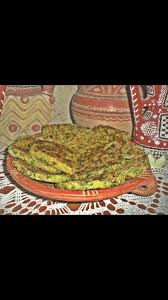 |